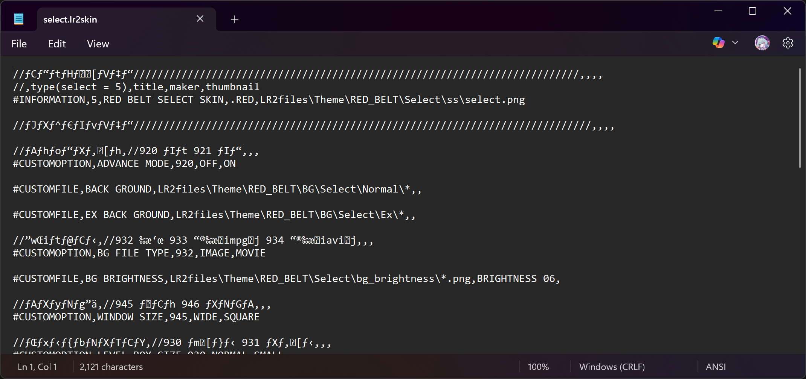

Basics of a LR2 skin
A skin contains three key files: A definition file (.lr2skin), a configuration file (.csv), and
image/audio files (.png or .jpg for image, .mpg for video).
The .lr2skin and .csv files are actually plain text files, and thus can be opened and edited in any
text processing software (or just Notepad)
Like this:

As for the external image/video or .csv file reference:
#IMAGE for images/videos
#INCLUDE for .csv files
#LR2FONT for bitmap font files (we will get to that later in this guide)
.lr2skin file
The heart of an LR2 skin.
This file is checked and loaded on startup, so if any changes are made to the file while LR2 is
running, the changes won't be registered.
The skin contains vital information about the skin such as its name and creator, where it is used and
its references.
It is also technically a CSV file at heart, and can also be edited in spreadsheet processors.
Usually Excel is the most convenient application for CSV editing since it automatically converts the
comma-delimited syntax to tab-delimited on launch.
If it doesn't, go into locale settings and check if digit grouping symbol
is a comma.
The original site covers some of alternatives to Excel, but other than LibreOffice Calc, I'm not sure
if the rest of the ones mentioned are still up and downloadable.
Here is a list of some modern-day alternatives:
- LibreOffice Calc
- Google Sheets
- WPS Office Sheets
- VSCode with Rainbow CSV (not required, but helps a lot)
...or just use Notepad
.csv file
The .csv file is a configuration file that contains the skin's settings and references to the
definitions used in the skin.
It is used to define the layout and behavior of the skin, such as the position and size of elements,
as well as their visibility and functionality.
While it is used in almost every skin, it is NOT mandatory.
If you're a maniac you can just implement all the definitions in one .lr2skin file if you want
The convenience of using .csv files is that you can change the definitions in it on-the-fly, without
the need to restart LR2.
It is also useful for option branching (one file is used for one definition and others for other
definitions).
Image files
Image files are used to display graphics in the skin, such as backgrounds, buttons, and other visual
elements.
LR2/LVF supports most common image formats such as .bmp, .png or .jpg, and less commonly known ones
such as .tga or .dds (while less tools support these filetypes, but I guess it's better than .png
in-game???)
For editing these files, anything that has support for alpha channels is HIGHLY recommended.
For example, GIMP, Photoshop, Paint.NET, or even online editors like Photopea.
In my experience, using Paint.NET is recommended because of it's versatility and simplicity compared
to other editing softwares if you're just creating simple sprites.
Video files
As far as I know, the applications of a video file is not a lot, except for the BGA and the select
skin background.
LR2/LVF supports .mpg files, and it is recommended to use a video editor that can export to this
format.
Keep in mind that you cannot set the starting coordinates, nor the partial width and height of the
file, nor its transparency.
.lr2font files
LR2/LVF supports bitmap fonts, which are used to display text in the skin.
Each font spritesheet has one .lr2font file, which points where the characters should be as well as
it's width, height, and spacing.
I recommend using MAFU (as a replacement for
hard-to-use built-in FontUtil). If anyone can find the
download link to it please @ me. Thanks @moodreceptor on
Discord for the link!
DXA encoding
It is possible to use DXA encoding to compress files and save storage.
As far as I know, there isn't a more convenient tool to encode/decode such files, other than
its built-in tools. (DxaEncode / DxaDecode)
To encode/decode a file, use the command line tool with the following syntax since help doesnt
work:
DxaEncode.exe [input font folder] [output dxa file]
DxaDecode.exe [input dxa file path] [output folder]